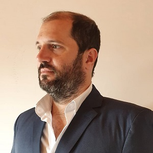

Socios y asociados
Dr. Gaston Jeanneret
Recibido en la UBA en 2010. Dedicado siempre al estudio del derecho y ex miembro de la comisión de juventud del colegio de Abogados de Quilmes tengo otras pasiones como dedicar tiempo a la familia y la natación.
Contactame